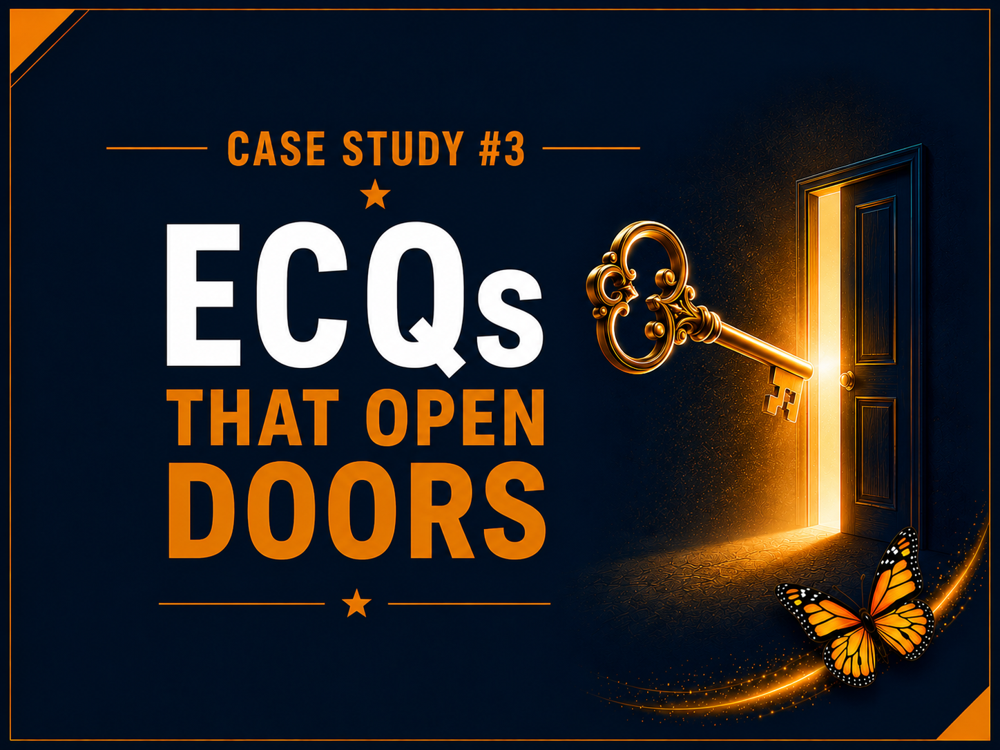
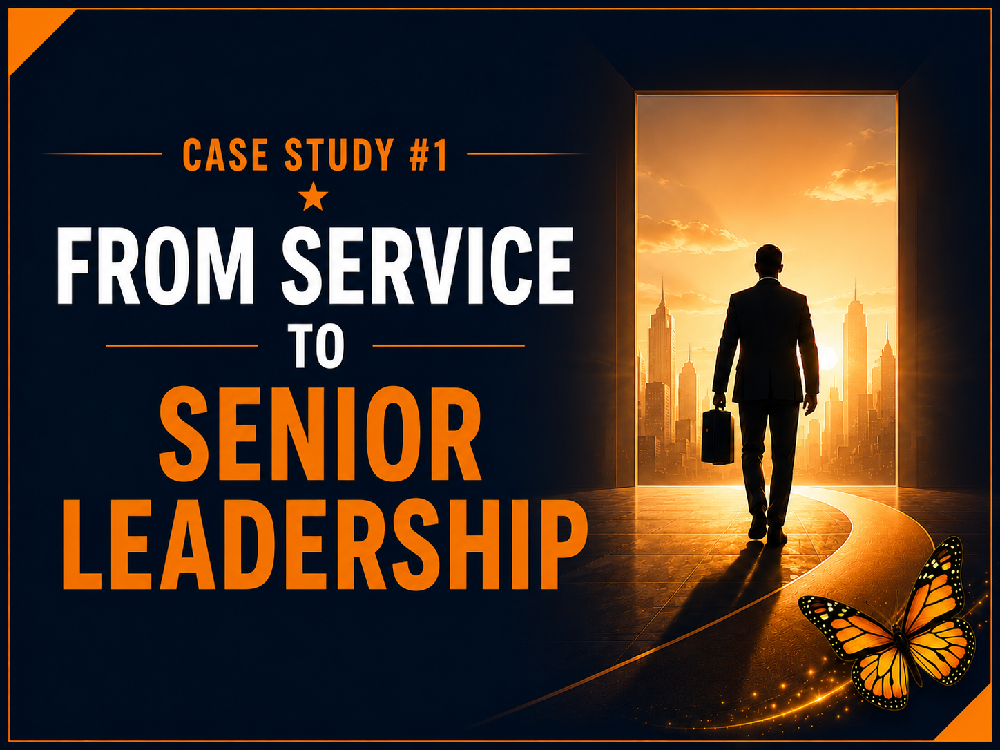
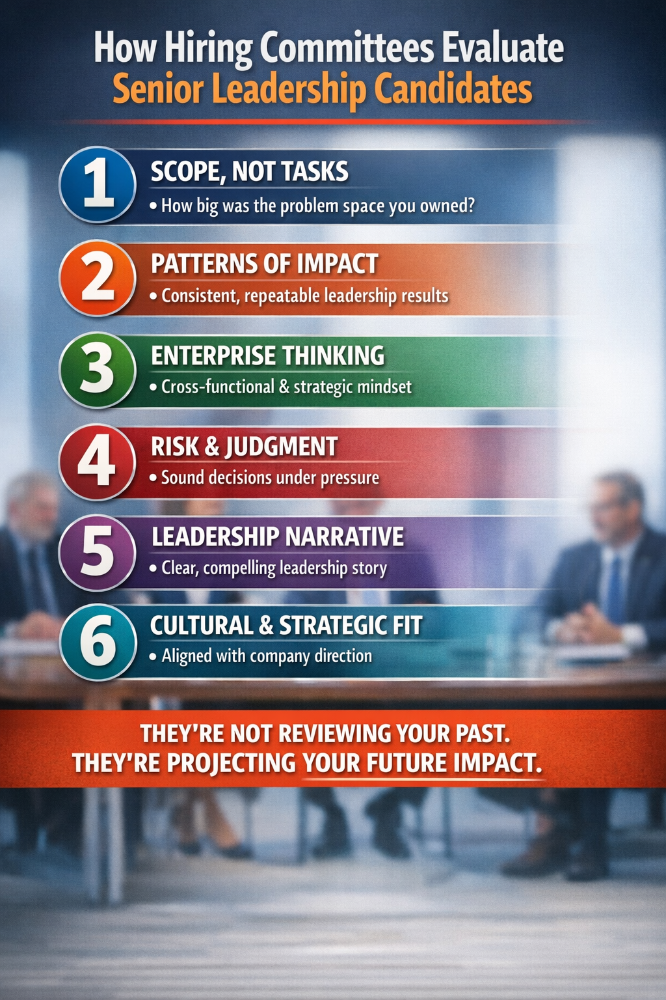
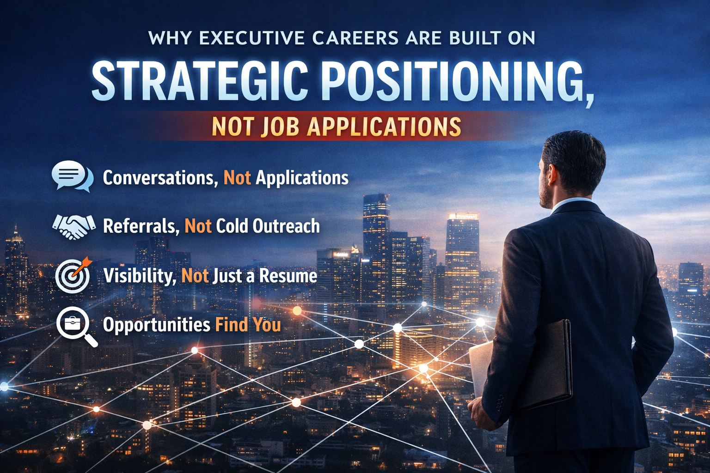

Home / Blog
Insights
Thinking for leaders in transition.
Short, direct essays on how executive hiring actually works — and how to position for it.

Networking · July 2026
Who speaks for you when you're not in the room?
Read →Case study · July 2026
Case Study #4: David's journey from expert to executive
Read →
Case study · July 2026
Case Study #3: Michael's journey from GS-15 to SES
Read →Case study
Case Study #2: Francine's journey from GS-14 to executive leadership
Read →
Case study
Case Study #1: Jim's journey from service to senior leadership
Read →
Hiring
How hiring committees evaluate senior leadership candidates
Read →
Strategy
Why executive careers are built on strategic positioning, not job applications
Read →Transition
Why senior leaders often struggle during career transitions
Read →
Perspective
The strategist advantage
Read →Perspective
Why AI cannot replace discernment
Read →Interviews
Why you're not getting interviews — and what to do about it
Read →Transition
From pension to promotion: how to reinvent yourself after government work
Read →Mindset